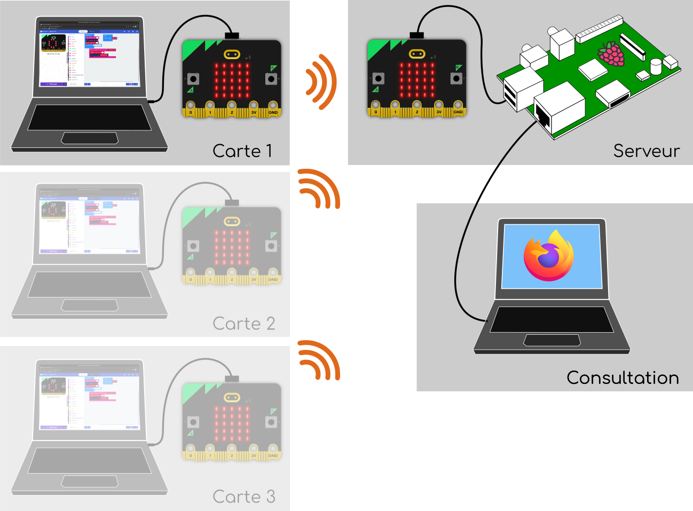
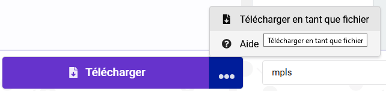

Internet des objets avec micro:bit
Dans cette activité, vous allez utiliser des cartes micro:bit pour développer une application très simple illustrant le principe de l'Internet des Objets (IoT: Internet of Things).
Objectifs
Les objectifs de l'activité sont de:
- Programmer et exécuter un programme simple sur une carte micro:bit,
- Échanger des messages par radio entre deux cartes micro:bit,
- Comprendre les contraintes liées à la conception d'un protocole de communication,
- Imaginer sur cette base des activités pédagogiques transposables facilement en classe.
Description de l'architecture
La carte Micro:bit ne peut pas se connecter seule à Internet. Nous mettrons en oeuvre un dispositif s'appuyant sur une carte Raspberry Pi (ou PC sous Linux) pour récupérer des données captées par plusieurs cartes Micro:bit sur une page web, accessibles depuis un ordinateur.
Le système IoT est représenté sur la figure ci-dessous. Il comprend:
-
Des cartes micro:bit clientes (une par stagiaire) qui envoient des messages par radio vers une autre carte micro:bit serveur. Dans cette activité, vous ne développerez que la partie "client".
-
Une carte micro:bit centrale reçoit tous les messages radio et les envoie vers une machine serveur (Raspberry ou PC) au travers de la liaison série sur USB.
-
Sur ce serveur un logiciel interprète les messages reçus et représente leur contenu sur la forme de pages web consultables depuis un navigateur.
-
Une première page affiche de façon synthétique les informations de l'ensemble des cartes. Son URL est
http://ADDRESSE_DU_SERVEUR:8080(remplacezADDRESSE_DU_SERVEURpar172.22.194.4ou celle qui vous sera donnée par les formateurs). -
D'autre pages affichent de manière plus détaillée les informations pour chacune des cartes. Leur URL est
http://ADDRESSE_DU_SERVEUR:8080/carte/NUMERO_DE_CARTE. Là aussi, remplacezADDRESSE_DU_SERVEURpar celle qui vous sera donnée par les formateurs etNUMERO_DE_CARTEpar le numéro qui vous a été assigné. ATTENTION: Ce numéro doit être sur deux chiffres. Par exemple si vous utilisez la carte n°5, vous devez utiliser la valeur05et non5.
-

Consignes
Vous êtes chargé·e de développer l'application de la carte cliente. Pour cela, vous devez respecter le protocole de communication qui vous est donné à la fin du sujet. Si vous souhaitez l'exploiter en classe, le code source des autres parties est disponible librement sur ce dépôt Github.
Si vous ne respectez pas strictement ce protocole, le serveur sera incapable de décoder vos messages :-(.
De plus, vous verrez que ce protocole permet le multiplexage des communications des différentes cartes sur le même canal radio. Si vous ne respectez pas le protocole, vous risquez donc d'interferer avec les communications de vos collègues!
Enfin, prenez le temps de voir comment les messages ont été structurés
pour ce protocole. Essayez notamment de comprendre pourquoi il a été
choisi d'utiliser des délimiteurs (; et : dans notre cas) pour
séparer les informations. D'autres solutions sont possibles. Essayez
d'en imaginer et discuter de leurs avantages et inconvénients avec les
formateurs.
Le but de l'activité est de vous faire découvrir librement et à votre rythme les possibilités de communication des cartes micro:bit. C'est pourquoi nous ne vous donnons pas de consignes précises. Si vous ne savez pas quoi faire, commencez par:
- transmettre l'état du bouton A,
- puis celui du bouton B,
- puis faites un programme qui fait changer la couleur RVB en fonction de l'orientation de la carte.
Comment commencer?
- Lancer le navigateur Firefox en cliquant
sur l'icône correspondante:
Bon à savoir: MakeCode, l’environnement de développement web pour
les cartes micro:bit, utilise la librairie
WebUSBqui n'est pas prise en charge par Firefox pour des raisons de sécurité. MakeCode fonctionne quand même, mais le transfert des programmes dans les cartes micro:bit fonctionne légèrement différemment - Connectez-vous au site de MakeCode: https://makecode.microbit.org/.
- Commencez un nouveau projet.
- Vérifiez que vous arrivez bien à programmer votre carte:
- Réalisez un programme très simple (par ex. en affichant un symbole sur le panneau de LEDs).
- Branchez votre carte au PC.
- Téléchargez le programme dans le PC. Cela enregistre un fichier
appelé
microbit-xxxx.hexdans le répertoireDocumentsde votre répertoire personnel.  - Utilisez ensuite l'explorateur de fichiers pour copier ce fichier
en le faisant glisser dans votre carte micro:bit qui apparaît comme une clé USB.
Le protocole proposé dans le cadre de cette activité présente un certain nombre de défauts et de limitation. Discutez entre vous et avec les formateurs des modifications qu'il conviendrait d'y apporter...
Spécification du protocole (format des messages radio)
Compte tenu des limites de l'environnement de développement par bloc, et afin de limiter la complexité, il a été choisi d'utiliser un protocole en mode texte. Cela signifie que les messages sont codés sous la forme de chaînes de caractères "lisibles par un humain". L'alternative aurait été d'utiliser un protocole binaire. N'hésitez pas à interroger les formateurs pour en apprendre d'avantage à ce sujet.
Par ailleurs, il est important de savoir que le cartes micro:bit ne sont pas capables d'envoyer sur la radio des messages de plus de 19 octets. Le protocole limite donc la taille des messages à 19 caractères au maximum.
Le serveur fonctionne sur le groupe radio n°1.
- Entête: Tous les messages commencent par
C:xxoùxxreprésente le numéro de la carte codé sur deux caractères (par ex.05pour la carte n°5). La valeur00est réservée. Le protocole est donc capable de gérer jusqu'à 99 cartes. - Champs: Un message peut contenir différents champs, dans la
limite de 19 caractères maximum.
- Les différents champs sont séparés entre eux par le caractère
;. Ce caractère ne doit pas être utilisé pour autre chose que la séparation des champs. Il est donc notamment interdit à l'intérieur des autres chaînes de caractères. Vous pouvez discuter avec les formations des solutions possibles pour palier cette limitation. - L'entête décrit ci-dessus est obligatoirement présent au début de chaque message. Il peut être suivi de un plusieurs autres champs.
- Tous les champs respectent un format de type
type:valeuroù- La
typedéfinit le type de champ - Le format de
valeurdépend du type de champ typeetvaleursont séparés par le délimiteur:. Ce caractère est donc interdit à l'intérieur des noms de types.
- La
- Les différents champs sont séparés entre eux par le caractère
- Types de champs: les types de champs suivants sont définis:
NAME: Lavaleurde ce champ est de type chaîne de caractère. Elle contient le nom de la carte.TEXT: Lavaleurde ce champ est de type chaîne de caractère. Elle contient une chaîne de caractère à transmettre au serveur.A: Lavaleurde ce champ est '0' ou '1'. Elle représente l'état du bouton A de la carte micro:bit.B: Lavaleurde ce champ est '0' ou '1'. Elle représente l'état du bouton B de la carte micro:bit.AB: Lavaleurde ce champ est '0' ou '1'. Elle représente l'état du bouton AB (paire constituée des boutons A et B appuyés simultanément) de la carte micro:bit.P0,P1etP2: Lavaleurde ce champ est '0' ou '1'. Elle représente respectivement l'état des brochesP0,P1ouP2de la carte micro:bit.MVT: Lavaleurde ce champ est de type chaîne de caractère. Elle décrit le type de mouvement mesuré par la carte. NOTE: Pour être complet, une liste des valeurs possibles devrait être indiquée...VAL: Lavaleurde ce champ est de type flottant (ou entier). Elle contient une chaîne de caractère à transmettre au serveur.TEMP: Lavaleurde ce champ est de type flottant (ou entier). Elle contient la valeur de la température mesurée par la carte micro:bit.PITCH: Lavaleurde ce champ est de type flottant (ou entier). Elle contient la valeur de l’orientation que la carte micro:bit a mesurée sur l'axe pitch.ROLL: Lavaleurde ce champ est de type flottant (ou entier). Elle contient la valeur de l’orientation que la carte micro:bit a mesurée sur l'axe de roulis.ACCX,ACCYetACCZ: Lavaleurde ce champ est de type flottant (ou entier). Elle contient la valeur de l’accélération que la carte micro:bit a mesurée respectivement sur l'axe x, y ou z.R: Ce type de champ sert à transmettre des codes couleur codés en RVB. Lavaleurde ce champ est une suite de trois entiers séparés par des,qui contiennent respectivement les valeurs des composantes rouge, verte et bleue.
Exemples:
- le message
C:02;ROLL:7indique que le capteur de la carte n°2 a lu la valeur7sur l'axe de roulis. - le message
C:21;R:0,255,255indique que la carte n°21 transmet la couleur jaune - le message
C:03;A:0;B:1;P0:1indique que sur la carte n°3 transmet la- le bouton A est relâché,
- le bouton B est appuyé et
- une tension est présente sur la broche
P0.